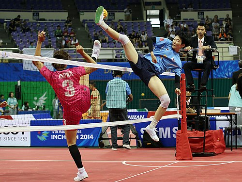
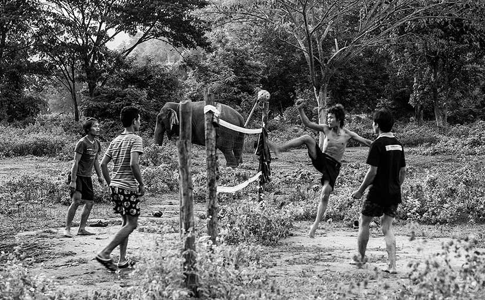
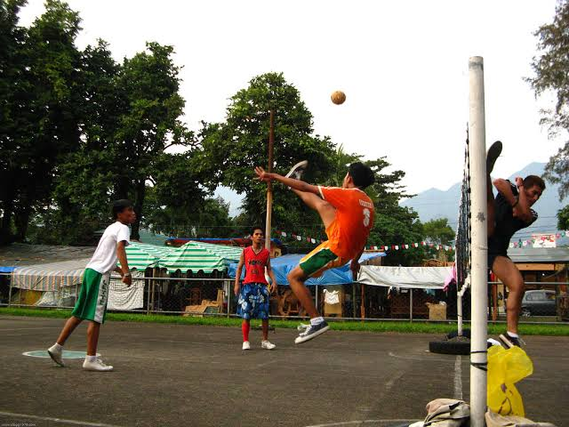
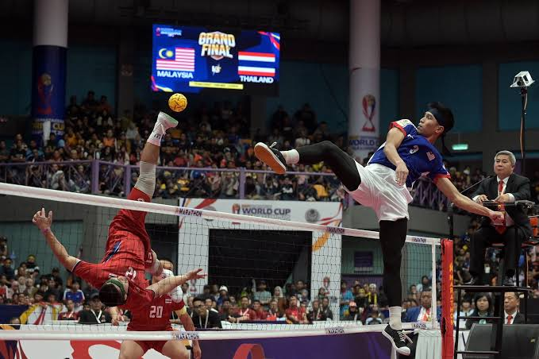
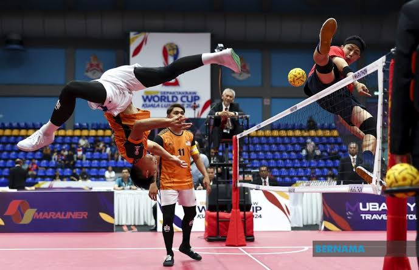

WORLD CUP India clinched the ISTAF Sepak Takraw World Cup 2025 title after beating Japan 2-1 in the final. Playing before the home crowd in Patna, Bihar, the Indian regu team won its first ever gold medal in the Sepak Takraw World Cup history.

1945. It was introduced in the 1965 Southeast Asian Games in Kuala Lumpur as a medal event. Sepak Takraw is considered Malaysia's national sport

1945 TAKBU Player baSeveral young men are engaged in a sepak takraw match showcasing impressive arcotic kicks to keep the ball airborne

INTRAMURALS SepakTakraw Sepaktakraw is a combination of the two languages, SEPAK a term used inMalaysia, Singapore and Indonesia which translate into “kick” and TAKRAW refers

"
The International Sepaktakraw Federation (ISTAF) is the global governing body for the sport of Sepaktakraw, a dynamic and exciting

KUALA LUMPUR: As expected, Malaysia advanced to the quarter-finals of the team event in style after defeating Japan 3-0 in the final match of Group C at the 2024 Sepak Takraw World Cup held at Titiwangsa Stadium last night.